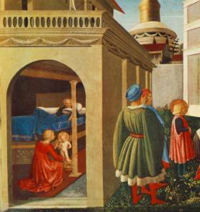

The Childless Couple
Fifteen years had passed since the persecutions that
had been instigated by the Roman emperor Valerian. In the year 257 AD, he had issued edicts of
persecution against the Christians, initially just attacking the clergy and the
corporate life of the Church. Valerian confiscated their property and denied
them the right of assembly. In time, however, he initiated actual physical
persecution.
This surely came as a surprise to the Christians,
whom he had befriended only a few years earlier. According to the Greek
Christian writer Eusebius:
“Both phases of Valerian’s rule are astonishing, the
first being especially remarkable in character: he was so wonderfully friendly
and gentle to the people of God. Not one of the emperors before him – not even
those who were supposed to have been avowed Christians – was so kindly and
sympathetic in his attitude to them as was Valerian at first, when he received
them publicly with all friendship and affection and filled his whole palace
with God-fearing people, making it a church of God. But what a change when he
was induced to get rid of them by the teacher and guild-leader of the magicians
from Egypt, who urged him to kill or persecute pure and saintly men as rivals
who hindered his own foul, disgusting incantations! For they are and were able,
by being present and seen, and simply by breathing on them and speaking boldly,
to frustrate the schemes of the wicked demons. He also induced him to perform
devilish rites, loathsome tricks, and unholy sacrifices, to cut the throats of
unfortunate boys, use the children of unhappy parents as sacrificial victims,
and tear out the vitals of newborn babies, cutting up and mincing God’s
handiwork, as if these things would bring them happiness.” (Eusebius, The History of the Church, p. 226)
Those who survived looked back with a sigh of
relief, hoping that the hostilities against them were over. They weren’t.
During this relatively tranquil period between
persecutions, our attention is drawn to the home of Theophanes and Nonna.
According to the Vita Compilata, they
were Greek Christians. Theophanes was a bishop and Nonna an extremely holy
woman.
According to the Vita
Per Metaphrasten by St. Simeon Metaphrastes,
“The home of his admirable father was Patara, the
foremost famous city of Lycia. His parents were of substantial lineage, holding
property enough without superfluity.”
Married for many years (some say a full thirty years!), they were content with their lives except for their lack of a child. Nonna had long prayed for a child and, like Hannah in the Hebrew Scriptures, she had promised God that her firstborn would be dedicated to His service.
Finally their prayers were answered and, in roughly
the year 275 AD,
a son was born. They named him Nicholas, which means “victory for the people.”
And he – by the blessing of God – truly appeared as a conqueror of evil, for
the good of the entire world.
According to legend, when the midwife wanted to bathe him after his birth, Nicholas stood upright in the tub – for two hours, as some versions will have it! – and raised his hands over his head in an effort to praise the Lord. Soon thereafter, the infant – while still in the baptismal font – stood on his feet three times, without support from anyone, giving honor to the Holy Trinity.
From his infancy, Nicholas began a life of fasting,
and on Wednesdays and Fridays he accepted milk from his mother only once a day,
after the evening prayers of his parents.
According to the Vita
Per Metaphrasten by St. Simeon Metaphrastes,
“When it came time to nurse the infant and he was
placed at the maternal breast, God signified to all what kind of man Nicholas
was to be when he should come to the age of discretion. For it is a fact that
though throughout the rest of the week he would nurse at the breast like any
infant when Wednesday and Friday came he would take milk but once on each of
them. Thus from the earliest moment, self-disciplined by rigid rule even before
boyhood and from the very beginning, Nicholas showed how abstinence was a
familiar token. And so grew, the model of good behavior – in part reflecting
the habits of his parents, but also in part developing a goodness from within.”
According to the Vita
Per Metaphrasten by St. Simeon Metaphrastes,
“When they ‘had
planted near the running waters and brought forth fruit in due season,’ the
divine Nicholas, the mother ceased to bear; sterile from that day producing no
more children, as if Nature, having lavished such bounty, could give no more.
When the mother brought him into the light as at once the purest and the last
noble offspring, a fruit of true spiritual union, the parents endowed the world
with the acme of the virtues, that truly beautiful and bounteous issue – Nicholas
[I repeat], the admirable!
“Although their son typified with his conception that of the Baptist, whose mother, though sterile, brought him forth, yet John, when he was brought into the world, unlocked his mother’s womb, but Nicholas conversely closed his.”
Thought to Ponder:
Thought to Discuss around the Dinner Table: It’s
never too early to teach a child to praise the Lord and be thankful for all His
blessings. Make a list of specific ways that you can do this for your children.
How can you be an example to them as
well?
The Legend in Art: In
England there are two important iconographical cycles of his life, on the font
at Winchester Cathedral and on an ivory crosier-head at the Victoria and Albert
Museum, both of the twelfth century. The latter, a masterpiece of fine carving,
include several scenes, one of which is a lively depiction of the infant Nicholas
refusing his mother’s breast on Wednesdays and Fridays, as the legend states.
The Childless Couple

In the words of the English Liber Festivalis,
“... his parents called him Nycolas, that is a mannes
name, but he kepeth the name of a child, for he chose to kepe vertue, meknes,
and simplenes, and without malice.... And therefore, children don him worship
before all other Saints.”